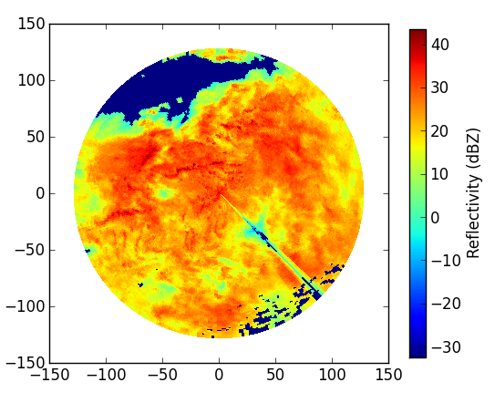

Read and plot DX radar data from DWD¶
This tutorial helps you to read and plot the raw polar radar data provided by German Weather Service (DWD).
Reading DX-data¶
The German weather service provides polar radar data in the so called DX format.
These have to be unpacked and transfered into an array of 360 (azimuthal resolution of 1 degree) by 128 (range resolution of 1 km).
The naming convention for DX data is:
raa00-dx_<location-id>-<YYMMDDHHMM>-<location-abreviation>---bin or raa00-dx_<location-id>-<YYYYMMDDHHMM>-<location-abreviation>---bin.
For example: raa00-dx_10908-200608281420-fbg---bin raw data from radar station Feldberg (fbg, 10908) from 2006-08-28 14:20:00.
Each DX file also contains additional information like the elevation angle for each beam. Note, however, that the format is not “self-describing”.
Raw data for one time step
Suppose we want to read a radar-scan for a defined time step. You need to make sure that the data file is available in the current working directory:
import wradlib
one_scan, attributes = wradlib.io.readDX('raa00-dx_10908-200608281420-fbg---bin')
The readDX function returns two variables: the reflectivity array, and a dictionary of metadata attributes.
Raw data for multiple time steps
To read multiple scans into one array, you should create an empty array with the shape of the desired dimensions. In this example, the dataset contains 2 timesteps of 360 by 128 values. Note that we simply catch the metadata dictionary in a dummy variable:
import numpy as np
two_scans = np.empty((2,360,128))
two_scans[0], _ = wradlib.io.readDX('raa00-dx_10908-0806021740-fbg---bin')
two_scans[1], _ = wradlib.io.readDX('raa00-dx_10908-0806021745-fbg---bin')
Visualizing dBZ values¶
Now we want to create a quick diagnostic PPI plot of reflectivity in a polar coordiate system:
ax, pm = wradlib.vis.plot_ppi(one_scan)
# add a colorbar with label
cbar = plt.colorbar(pm, shrink=0.75)
cbar.set_label("Reflectivity (dBZ)")
This is a stratiform event. Apparently, the radar system has already masked the foothills of the Alps as clutter. The spike in the south-western sector is caused by a broadcasting tower nearby the radar antenna.
Another image shows a convective situation:
ax, pm = wradlib.vis.plot_ppi(two_scans[0])
cbar = plt.colorbar(pm, shrink=0.75)
cbar.set_label("Reflectivity (dBZ)")
You can also modify or decorate the image further, e.g. add a cross-hair, a title, use a different colormap, or zoom in:
import pyplot as plt
# Plot PPI,
ax, pm = wradlib.vis.plot_ppi(two_scans[0], cmap="spectral")
# add crosshair,
ax = wradlib.vis.plot_ppi_crosshair((0,0), ranges=[40,80,128])
# add colorbar,
cbar = plt.colorbar(pm, shrink=0.9)
cbar.set_label("Reflectivity (dBZ)")
# add title,
plt.title('Reflectivity at 18-08-2006 02:25:00\nDWD radar Feldberg')
# and zoom in.
plt.xlim((-128,128))
plt.ylim((-128,128))
In addition, you might want to tweak the colorscale to allow for better comparison of different images:
fig = plt.figure(figsize=(10,6))
# Add first subplot (stratiform)
ax = plt.subplot(121, aspect="equal")
# Plot PPI,
ax, pm = wradlib.vis.plot_ppi(one_scan, cmap="spectral", vmin=20, vmax=60)
# add crosshair,
ax = wradlib.vis.plot_ppi_crosshair((0,0), ranges=[40,80,128])
# add colorbar,
cbar = plt.colorbar(pm, shrink=0.6)
cbar.set_label("Reflectivity (dBZ)")
# add title,
plt.title('Reflectivity at 2006-08-28 14:20:00\nDWD radar Feldberg')
# and zoom in.
plt.xlim((-128,128))
plt.ylim((-128,128))
# Add second subplot (convective)
ax = plt.subplot(122, aspect="equal")
# Plot PPI,
ax, pm = wradlib.vis.plot_ppi(two_scans[0], cmap="spectral", vmin=20, vmax=60)
# add crosshair,
ax = wradlib.vis.plot_ppi_crosshair((0,0), ranges=[40,80,128])
# add colorbar,
cbar = plt.colorbar(pm, shrink=0.6)
cbar.set_label("Reflectivity (dBZ)")
# add title,
plt.title('Reflectivity at 2008-06-02 17:40:00\nDWD radar Feldberg')
# and zoom in.
plt.xlim((-128,128))
plt.ylim((-128,128))
The radar data was kindly provided by the German Weather Service.